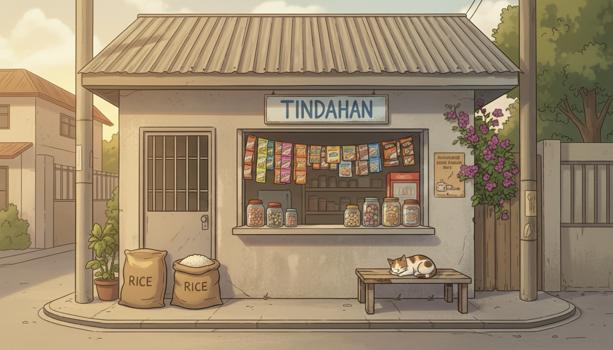
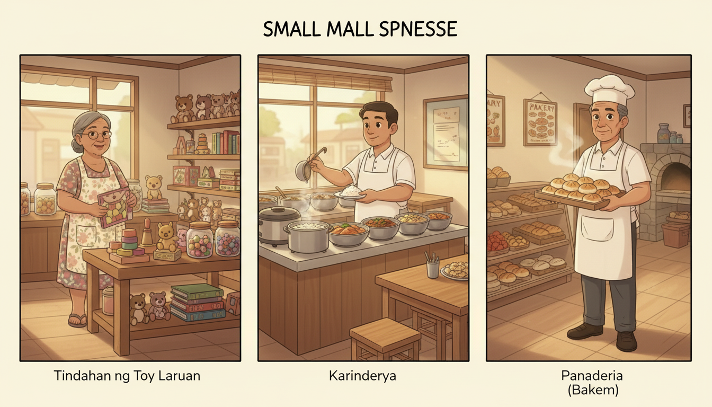
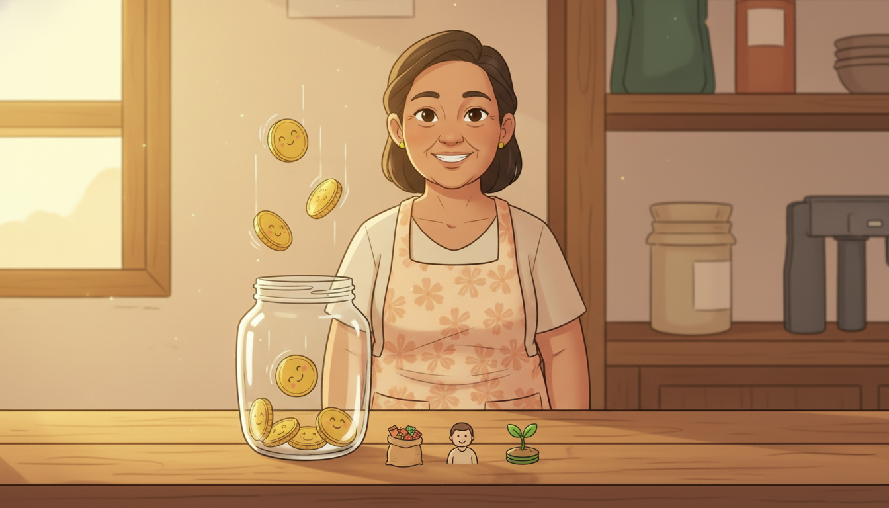
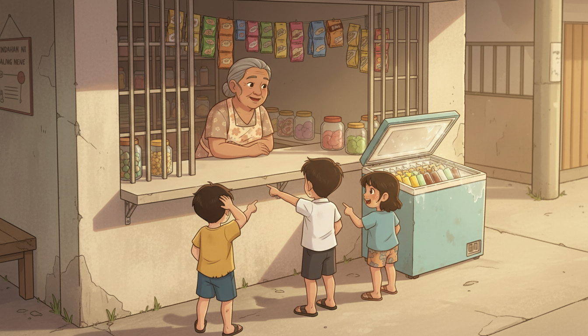

Have you ever bought something from a small store near your home? That store is a business. Today, we will learn what a business is, why people start one, and how a child like you can spot businesses everywhere. By the end of the lesson, you will be ready to find a business in your own neighborhood.
Objectives
Remember the names of three different businesses and what each one sells.
Understand that a business is a place where people make or sell things to others.
Understand at least two reasons people start a business.
Apply the idea by spotting a real business near your home.
Section 1
WHAT IS A BUSINESS?

A business is a place or an activity where people make things or sell things to others.
Some businesses make the things they sell, like a bakery that bakes bread. Other businesses help people, like a barber who cuts hair.
Three easy examples are a toy store, a restaurant, and a bakery.
Section 2
WHY DO PEOPLE START A BUSINESS?

People start a business for three big reasons:
To earn money for their family.
To help people get what they need.
To share something they love, like cooking or drawing.
When you have your own business, you can choose what to make and who to help.
Section 3
HOW DO YOU START A BUSINESS?

To start a business, you need three things:
A good idea — something people want or need.
A plan — how you will make it and where you will sell it.
Hard work — taking care of your business every day.
You can start small. Sell to your family first. Then to friends. Then to neighbors.
Quick check
Which one is a business?
AA school
BA bakery
CA garden
A bakery makes and sells bread, so it is a business.
Let's watch this
While you watch, listen for the new ideas in this lesson.
Story
Aling Nene's Sari-Sari Store
Meet Aling Nene from San Adrian.

Aling Nene's sari-sari store stood at the front of her house. At first, she only sold candy. One hot afternoon, three small kids came to her window. 'Aling Nene, ang init pala — wala bang malamig?' Aling Nene listened. The next day she had ice candy in her freezer, ten pesos each. The kids cheered. Aling Nene smiled at her apo Mira. 'A good store listens. Then it says yes.'
Think and answer:
What did the kids ask Aling Nene for on hot days?
Why did her store grow?
Name one small shop near your home. What do you think the owner listens for?
Try it
Find a business in your home
Look around your home for one minute. Find one thing your family bought from a business. Draw it in your notebook. Then write what kind of business sold it.
Group activity
Family Business Walk
8 minutesPair workOutput: 1 drawing per pair
Goal: See real businesses in your neighborhood and name what each one sells.
You'll need:
1 sheet of paper
1 pencil or crayon
1 timer (or the teacher's clock)
1 minFind a partner. Sit together with one paper between you.
30 secDecide who is the Spotter (names the business) and who is the Drawer (draws it).
3 minRound 1 — The Spotter names ONE business they know. The Drawer draws it. Together, talk: who is the customer?
30 secSwap roles. The Drawer becomes the new Spotter.
3 minRound 2 — New Spotter names a DIFFERENT business. New Drawer draws it. Together, talk: what does it sell?
Example
Lia: "I know Tatay Pilo's barbershop on the corner." Migs draws a barber chair and scissors. They say: "Customers are people who want haircuts." After 4 minutes, they swap. Migs: "My lola has a sari-sari store." Lia draws a counter with candy jars. They say: "It sells candy and snacks."
You did it when: You can show the next pair: (1) two businesses you drew, (2) what each one sells, and (3) who buys from each.
If you are alone: Walk around your home for two minutes. Find two businesses you know (sari-sari store, market, barbershop). Draw each one. Write the customer next to each.
Quick check
Toby has an idea for a new fruit drink, but he never makes it. What is Toby missing?
AThe hard work to make it real
BMore fun ideas to choose from
CNew friends to help at school
An idea alone is not enough — Toby needs the hard work to turn his idea into a real business.
Review
WHAT DID YOU LEARN?
1. What is one business near your home?
✓ Answer submitted
2. If you started a business, what would you sell?
✓ Answer submitted
3. Who would your first customer be? Why?
✓ Answer submitted
LET'S TAKE OFF!
Today you learned that a business is a place where people make or sell things to help others. With a good idea, a plan, and hard work, you can start one too — even at your age.